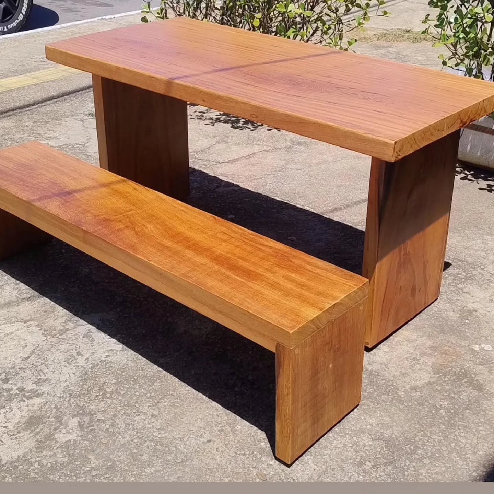
Mesa e banco em madeira
Conjunto fotografado em área externa
De Goiânia, para o seu espaço.
Mesas e bancos de madeira. Aparadores com base de aço.
Explore as peças e escolha uma referência para o seu espaço.
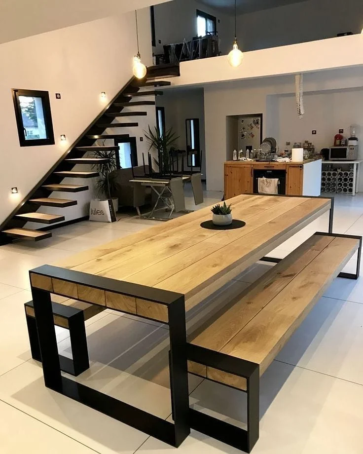
JB Móveis Rústicos & Industrial
Tampos de madeira, pés de aço preto e bases antigas com um novo uso. O acervo mostra mesas, balcões, estantes e restauros publicados pela JB.
A JB trabalha com móveis de madeira e aço em Goiânia. Escolha uma referência e conte onde ela vai ficar: a conversa pode começar pelas medidas, pelo uso e pelo desenho que você procura.
Veja o dia a dia da JBMesas, balcões, estantes e restauros.
Veja detalhes e escolha sua referência.
Fotografias das peças publicadas pela JB.

Conjunto fotografado em área externa
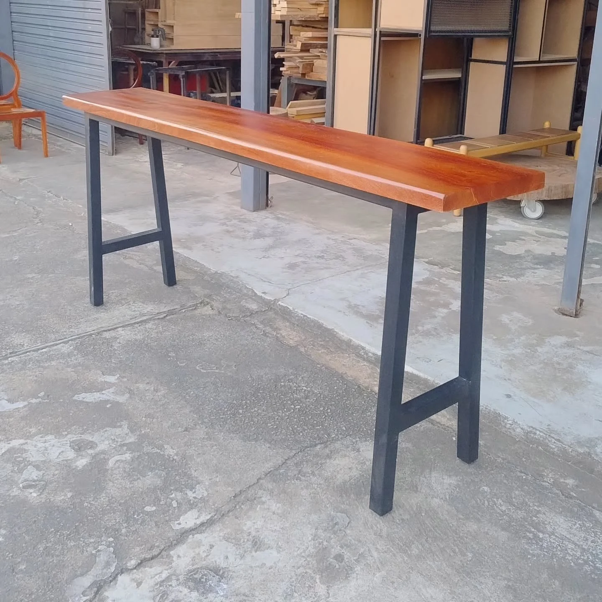
Tampo longo e pés pretos
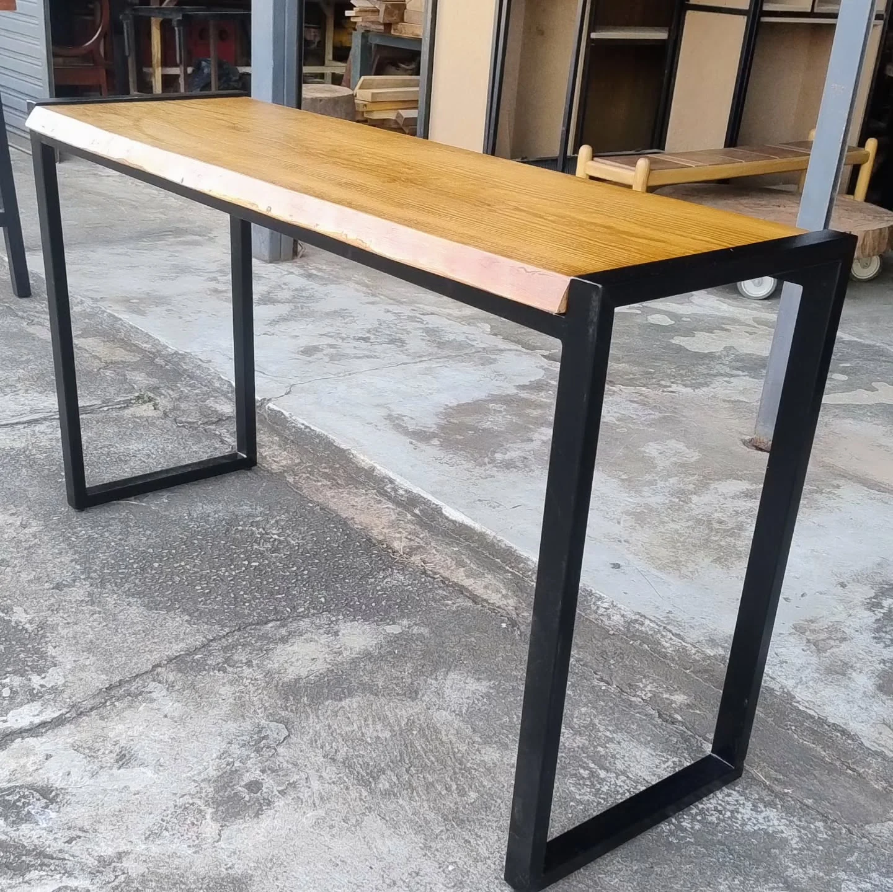
Tampo claro e base metálica
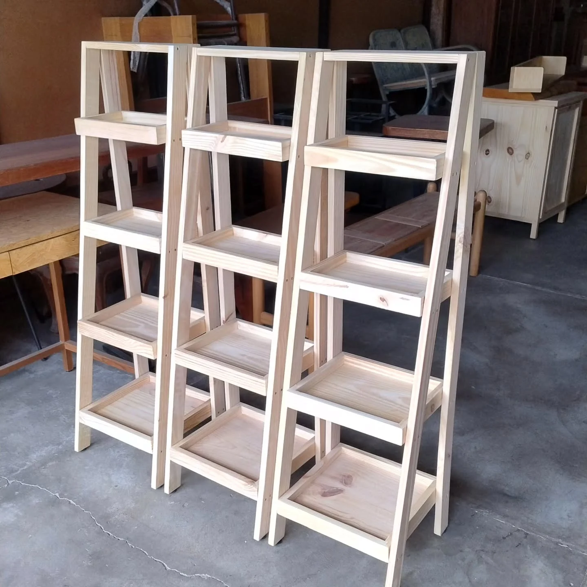
Módulos abertos em madeira clara
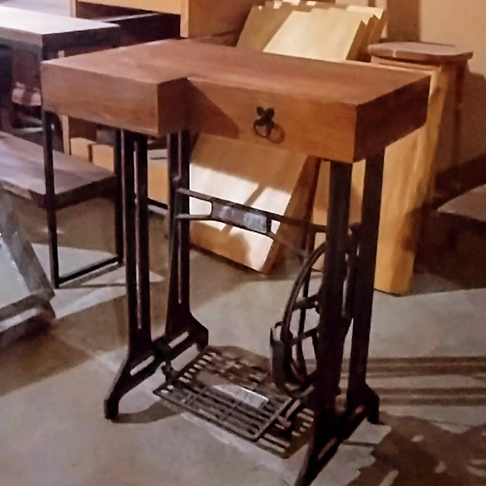
Gaveta de apoio e base reaproveitada
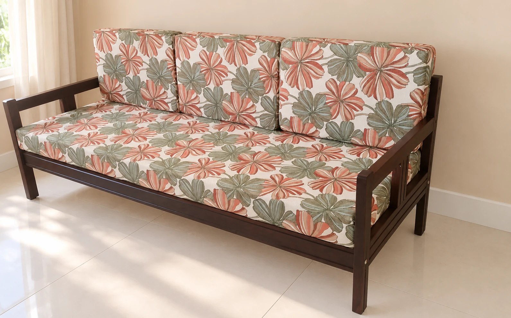
Assento e encosto em tecido floral
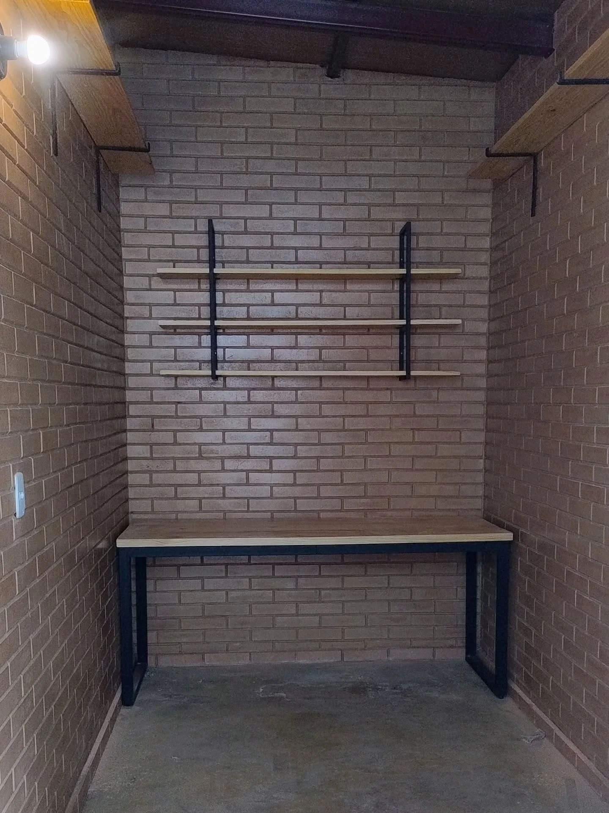
Madeira e suportes metálicos aparentes
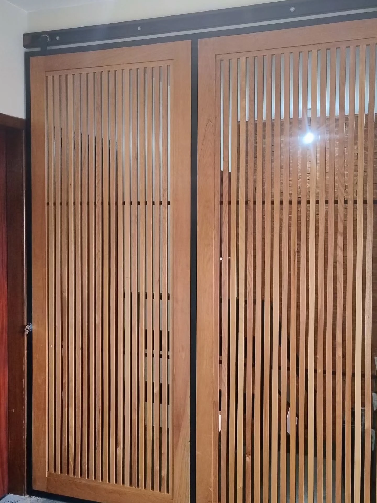
Ripado de madeira em estrutura preta
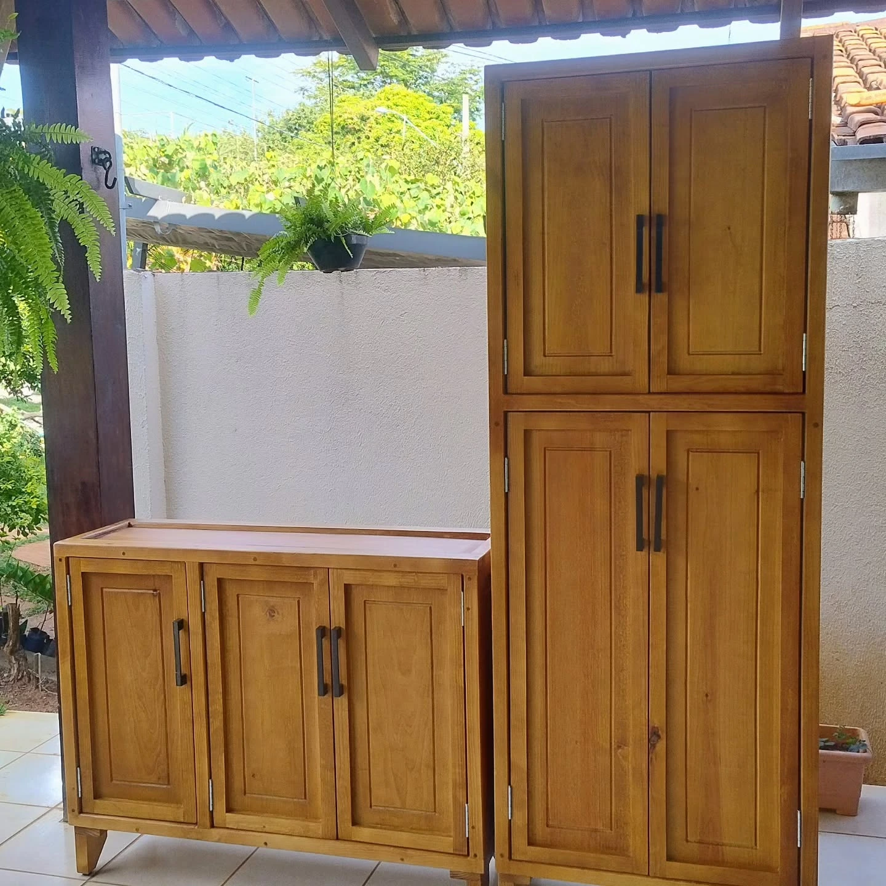
Módulos de alturas diferentes
Fotografias do portfólio. Modelos, medidas e disponibilidade devem ser consultados com a JB.
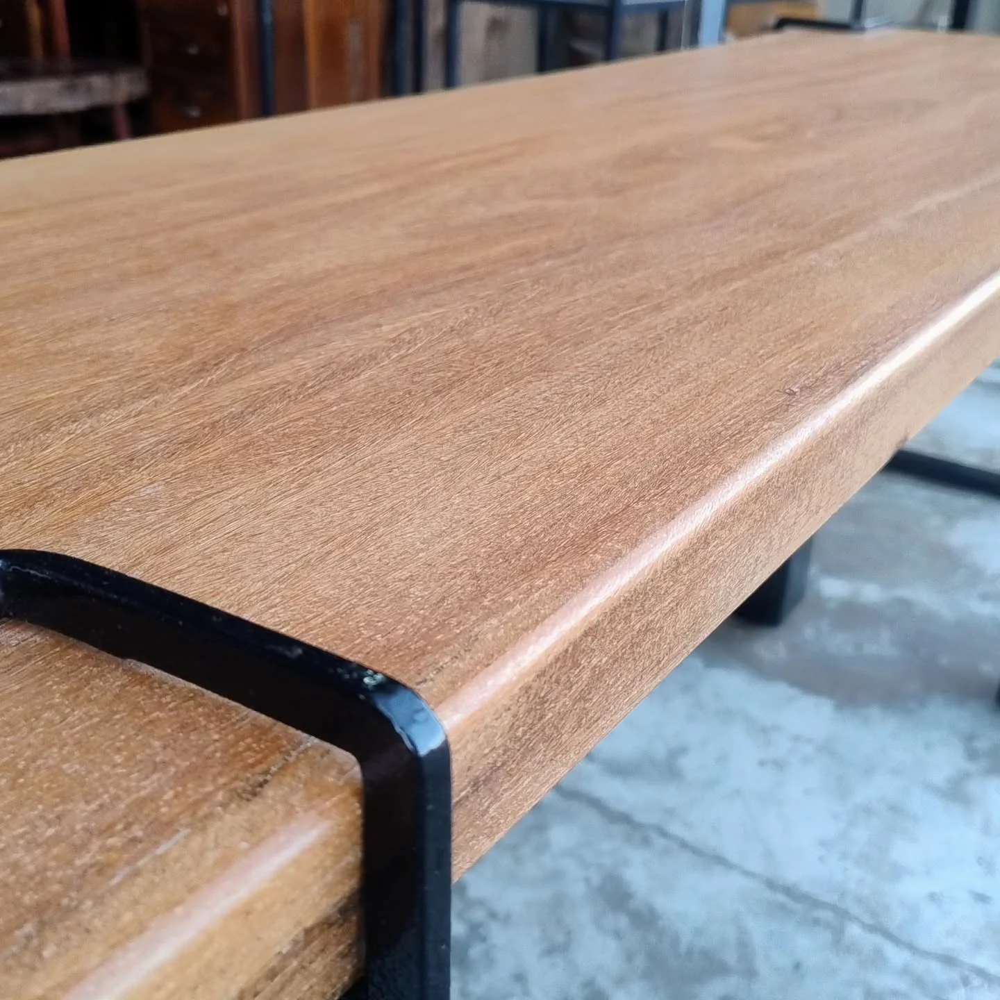
O detalhe faz parte da peça.Matéria à vista
O desenho aparece no encontro. De um lado, a textura da madeira. Do outro, a estrutura do metal.
A textura e os tons da madeira trazem presença ao ambiente. O que é natural deixa cada composição com um caráter próprio.
Peças que ajudam a compor
o espaço que você imaginou.
A mesa do jantar, o banco da varanda, o aparador que organiza. O rústico e o industrial podem conversar com diferentes ambientes.
Mobiliário para compor espaços comerciais com personalidade. Compartilhe o tipo de uso e as referências do que você está criando.
Vamos construir uma ideia?
Envie uma referência, as medidas e conte onde a peça vai ficar. A conversa continua no Instagram da JB.
Sua ideia, pronta para conversar.
Copie sua ideia e cole na conversa com a equipe.